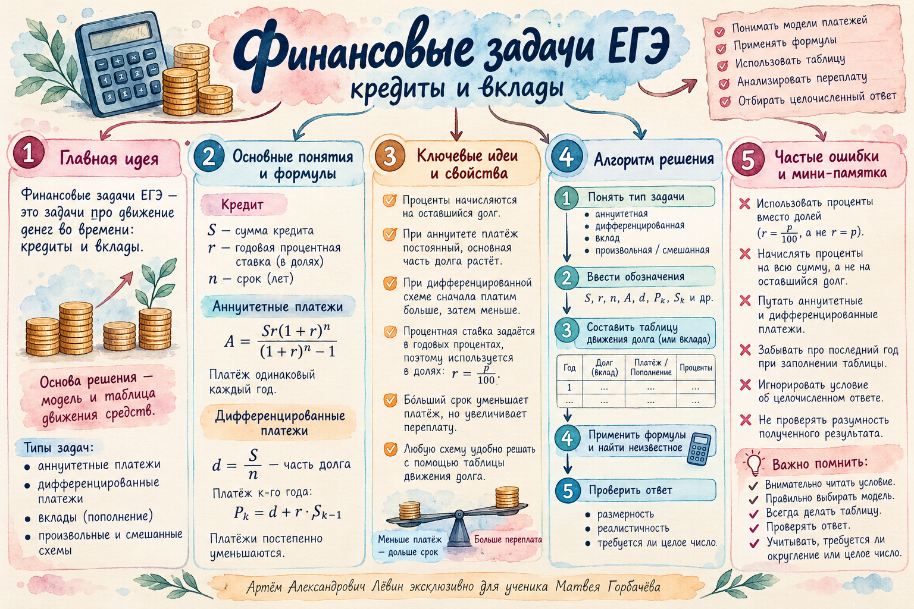

Аннуитетная
Все периодические платежи одинаковы. Проценты и погашение тела кредита внутри платежа меняются.
ЕГЭ / Финансовая математика / 22 октября 2026
Аннуитет, равные доли долга, произвольные остатки и смешанная схема. Главный инструмент — движение задолженности от периода к периоду.
Читайте условие до вычислений. «Равные платежи» и «равные доли основного долга» означают разные способы погашения.
Все периодические платежи одинаковы. Проценты и погашение тела кредита внутри платежа меняются.
Каждый год возвращают одинаковую часть долга. Сумма платежей уменьшается вслед за процентами.
Условие задаёт остаток долга после отдельных платежей; расчёт ведём таблицей.
На разных этапах действуют разные правила: только проценты, затем равные платежи.
Здесь S — исходный кредит; r — ставка за период в процентах; B — остаток после платежа; D — задолженность с процентами до платежа; P — платёж. В конце обязательно Bn = 0.
При трёх равных платежах x итоговая задолженность равна нулю, поэтому Sk³ − xk² − xk − x = 0. Для n периодов получаем:
Разобранный пример. Кредит 910 тыс. руб., 20% годовых, три равных платежа. При k = 1,2 сумма одного платежа:
Три платежа: 1296 тыс. руб. = 1 296 000 руб.
Если в вопросе просят общую сумму, обязательно умножьте найденный годовой платёж на число периодов.
Каждый взнос приносит проценты только за то время, пока находится на вкладе. Для двух пополнений после первого и второго года:
Пример. Вклад 100S тыс. руб. под 10%, затем два пополнения по 400 тыс. руб. Итог 1722,6 тыс. руб.:
Получаем S = 6, поэтому первоначальный взнос равен 600 тыс. руб.
Сначала найдите часть основного долга S/n. Затем за каждый год начислите проценты на оставшуюся перед платежом сумму.
При кредите 2,5 млн руб. под 15% на четыре года тело кредита ежегодно уменьшается на 0,625 млн руб., а проценты за годы составляют 0,375; 0,28125; 0,1875; 0,09375 млн руб. Общая выплата: 3,4375 млн руб.
Когда остаток указан в условии, удобнее сначала вычислить его, затем найти платёж как разность общей задолженности и остатка.
Пример урока. Кредит 750 тыс. руб. под 12% на три года. После первых двух лет остаток равен 80% долга на начало года, после третьего — нулю.
| Год | На начало | Проценты | С процентами | Платёж | Остаток |
|---|---|---|---|---|---|
| 1 | 750 | 90 | 840 | 240 | 600 |
| 2 | 600 | 72 | 672 | 192 | 480 |
| 3 | 480 | 57,6 | 537,6 | 537,6 | 0 |
Общая сумма платежей: 240 + 192 + 537,6 = 969,6 тыс. руб. = 969 600 руб.
Ключевой момент: в третьем году нужно погасить весь долг. Уменьшение на 20% относится только к первым двум годам.
При ставке 5% и остатках S → 0,9S → 0,8S → 0,7S первые платежи равны 0,15S; 0,145S; 0,14S. Рассчитывайте строку за строкой, используя одно правило.
При ставке 20% и остатках S → 0,8S → 0,4S → 0 платежи по годам составляют:
Когда каждый платёж строго меньше 5 млн руб., нужно выполнить три условия одновременно. Наибольшее целое S равно 8 млн руб.
Когда ограничена общая сумма, сначала сложите платежи: Pобщ = 1,44S, затем решайте неравенство. Строгая граница исключается.
Кредит 3,3 млн руб. под 20% на пять лет: первые три года платят лишь проценты, два последних — по x млн руб.
За каждый из первых трёх лет платят 0,66 млн руб.; тело кредита остаётся равным 3,3 млн руб. В четвёртом году долг с процентами — 3,96 млн руб.
Последний платёж больше первого на 2,16 − 0,66 = 1,5 млн руб.
Решите самостоятельно. Для кредитов используйте формулу или таблицу, а ответы сверяйте после завершения.
Вклад открыли на три года под 10% годовых, внеся 100S тыс. руб., где S — натуральное число. После первого и второго года вклад пополняли на 200 тыс. руб. Итоговая сумма — 1260,6 тыс. руб. Найдите S.
Кредит 210 тыс. руб. взят на два года под 10%. Долг погасили двумя равными ежегодными платежами. Найдите общую сумму платежей в рублях.
Кредит 800 тыс. руб. под 10% на четыре года возвращают равными долями основного долга. Проценты ежегодно начисляют на оставшуюся задолженность. Найдите общую сумму выплат в рублях.
Кредит 1 млн руб. взят на два года под 10%. После первого года долг уменьшается на 30%, после второго кредит закрывают. Найдите сумму платежей в рублях.
Кредит 900 тыс. руб. выдан на три года под 10%. После первого и второго года остаток равен 80% долга на начало соответствующего года. После третьего года кредит погашен. Найдите общую сумму выплат в рублях.
Кредит S выдан на три года под 10%. После первого и второго года остаток равен 80% долга на начало года; затем кредит закрывают. На сколько процентов все платежи превышают S?
Кредит 1,5 млн руб. под 5% за месяц погашают за четыре месяца. Остатки после первых трёх платежей равны 0,9S; 0,8S; 0,7S, где S = 1,5 млн руб. Найдите общую сумму платежей в рублях.
Кредит S млн руб. (S — натуральное число) взят на три года под 20%. Остатки составляют 0,8S; 0,4S; 0. Найдите наибольшее S, при котором каждый платёж строго меньше 6 млн руб.
В условиях задания 8 найдите наибольшее натуральное S, если общая сумма всех платежей строго меньше 13 млн руб.
Кредит 2,75 млн руб. взят на пять лет под 20%. Первые три года платят только проценты, последние два — равными платежами. На сколько рублей последний платёж больше первого?
В заданиях 8 и 9 различаются ограничения: каждый платёж либо их сумма.
